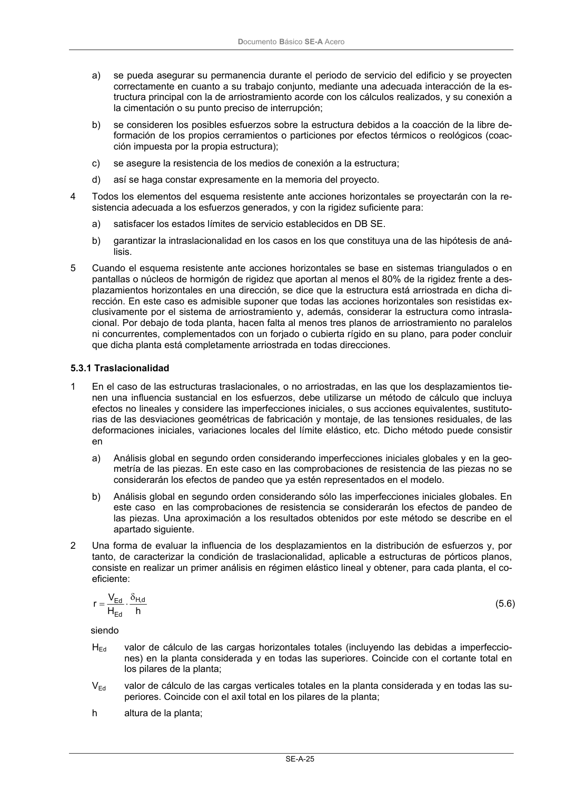

DB-SE-A · 5.3 Estabilidad lateral global · versión 2007-10-23 · capa oficial
Formatos: JSON compacto · Markdown · PDF fuente
Ámbito del documento · texto del ámbito · documento y tablas
ID técnico a0048 · PDF pág. 26-27 · jerarquía no validada por persona · contrastado con el literal de la página 26 (candidato tipográfico); no validado por persona · padre: raíz
5.3 Estabilidad lateral global 1 Todo edificio debe contar con los elementos necesarios para materializar una trayectoria clara de las fuerzas horizontales, de cualquier dirección en planta, hasta la cimentación. 2 La citada trayectoria puede basarse en la capacidad a flexión de las barras y uniones (pórticos rígi- dos), o en la capacidad a axil de sistemas triangulados dispuestos específicamente (por ejemplo: cruces de San Andrés, triangulaciones en K, X, V, etc) denominados usualmente arriostramientos. 3 Para arriostrar, pueden usarse pantallas horizontales (diafragmas rígidos o forjados) o verticales (cerramientos o particiones de fábrica, chapa conformada, paneles, muros de hormigón, etc), siempre que: DocumentoBásico SE-A Acero SE-A-25 a) se pueda asegurar su permanencia durante el periodo de servicio del edificio y se proyecten correctamente en cuanto a su trabajo conjunto, mediante una adecuada interacción de la es- tructura principal con la de arriostramiento acorde con los cálculos realizados, y su conexión a la cimentación o su punto preciso de interrupción; b) se consideren los posibles esfuerzos sobre la estructura debidos a la coacción de la libre de- formación de los propios cerramientos o particiones por efectos térmicos o reológicos (coac- ción impuesta por la propia estructura); c) se asegure la resistencia de los medios de conexión a la estructura; d) así se haga constar expresamente en la memoria del proyecto. 4 Todos los elementos del esquema resistente ante acciones horizontales se proyectarán con la re- sistencia adecuada a los esfuerzos generados, y con la rigidez suficiente para: a) satisfacer los estados límites de servicio establecidos en DB SE. b) garantizar la intraslacionalidad en los casos en los que constituya una de las hipótesis de aná- lisis. 5 Cuando el esquema resistente ante acciones horizontales se base en sistemas triangulados o en pantallas o núcleos de hormigón de rigidez que aportan al menos el 80% de la rigidez frente a des- plazamientos horizontales en una dirección, se dice que la estructura está arriostrada en dicha di- rección. En este caso es admisible suponer que todas las acciones horizontales son resistidas ex- clusivamente por el sistema de arriostramiento y, además, considerar la estructura como intrasla- cional. Por debajo de toda planta, hacen falta al menos tres planos de arriostramiento no paralelos ni concurrentes, complementados con un forjado o cubierta rígido en su plano, para poder concluir que dicha planta está completamente arriostrada en todas direcciones.

PDF fuente redistribuible: copia fiel enlazada en esta página (SHA256 verificado).